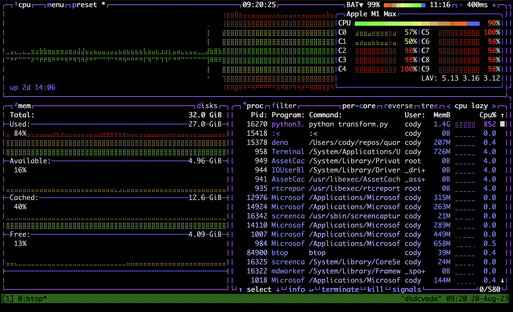
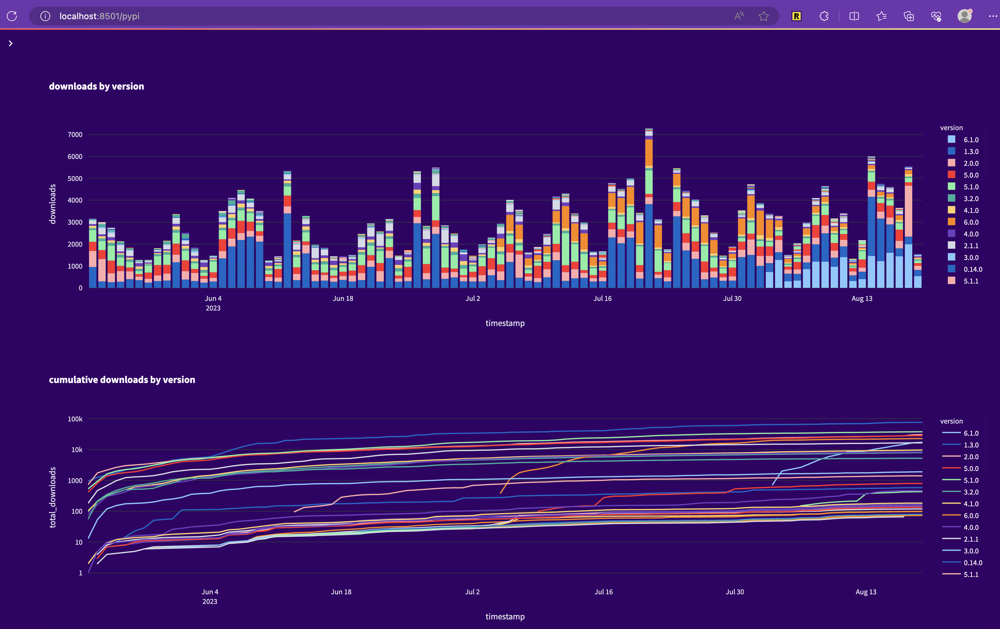
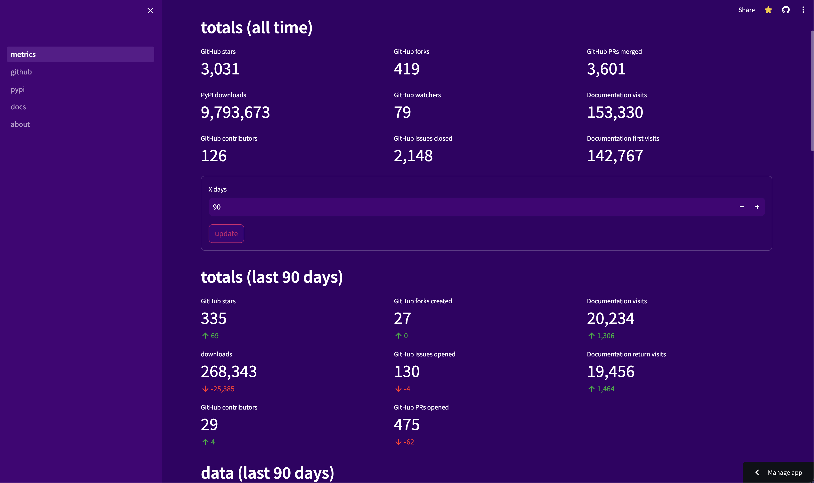
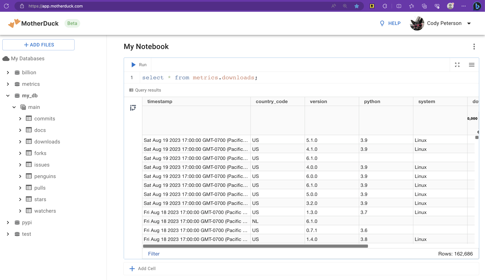
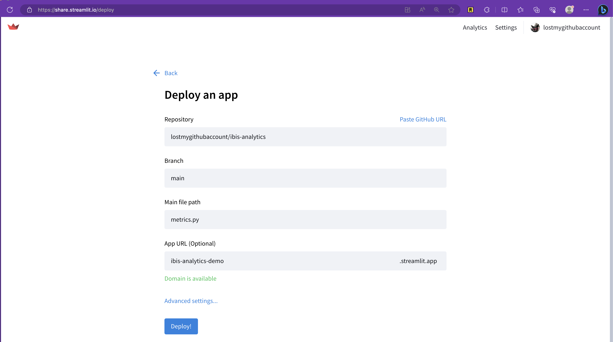

graph TD
style DataSources fill:#93c6ed
style Extraction fill:#297932
style Transform fill:#ffa500
style Upload fill:#4caf50
style Analytics fill:#b5e48c
style CloudStorage fill:#ffeb3b, stroke:#f44336, stroke-width:2px, stroke-dasharray: 5, 5
subgraph DataSources[Data sources]
GitHub
PyPI
GoatCounter
IbisCI
end
GitHub[GitHub GraphQL API] --> |Ingest with Python as JSON| JSON
PyPI[PyPI downloads Google BigQuery dataset] --> |Ingest with Ibis as Parquet| Parquet
GoatCounter[GoatCounter REST API or GUI] --> |Ingest as gzipped CSV| CSV
IbisCI[Ibis CI Google BigQuery dataset] --> |Ingest with Ibis in DuckDB database file| DuckDB
subgraph Extraction[Data extraction]
JSON
Parquet
CSV
DuckDB
end
Extraction --> |Load sources with Ibis + DuckDB| Transform
subgraph Transform[Data transformation]
PythonScript[Transform with Ibis + DuckDB]
GitHubTables[GitHub tables: stars, issues, pulls, forks, watchers, commits]
PyPITables[PyPI tables: downloads]
CITables[CI tables: jobs, workflows, analysis]
end
PythonScript --> GitHubTables
PythonScript --> PyPITables
PythonScript --> CITables
Transform --> |Push to prod| Upload
subgraph Upload[Load production data]
ProductionDB[Production database on MotherDuck]
CloudStorage[Backup to Azure Blob Storage]
end
Upload --> |Access data anywhere| Analytics
subgraph Analytics[Analytics everywhere]
PersonalLaptop[Personal laptop]
WorkLaptop[Work laptop]
Dashboard[Dashboard]
Coworkers[Coworkers]
end
Introduction
As a Python data user, I’ve wanted a more modular, composable, and scalable ecosystem. It finally feels close. Wes McKinney released pandas c. 2009 to bring dataframes into Python and it became one of the most used packages. It was built when small data was smaller and though still an excellent dataframe library today has some downsides Wes wrote about in his “Apache Arrow and the ‘10 things I hate about pandas’” blog post. Wes created Ibis (and Apache Arrow) to address these issues and more with a different approach than any other Python dataframe library by supporting any backend, including pandas or DuckDB or Polars or BigQuery or Snowflake or PySpark or over a dozen others.
I’ve experienced many pains of the ecosystem myself. I downloaded a 1 GB CSV from a database GUI and used pandas to munge it because I couldn’t figure it out in SQL. When building larger ML demos that included data preprocessing on GBs, I hit OOM errors and learned about how much data expands in memory and why to store files in compressed parquet and how to partition data. I started using PySpark and Dask to overcome hurdles. I slowly learned about databases. Fortunately while I’ve been learning, others (including many Ibis contributors) have been building a modern, open-source Python data ecosystem!
Ibis plays a part but is only one component in any real data project. We’ll look at how to combine a variety of open-source tools and freemium services including:
- Ibis (dataframe library)
- DuckDB (database and query engine)
- Plotly (visualization library)
- Streamlit (dashboard library)
- justfile (command runner)
- TOML (configuration)
- GitHub (source control, CI/CD)
- GitHub web APIs (source data)
- Google BigQuery (source data)
- Azure Blob Storage (cloud storage backup)
- MotherDuck (cloud service for DuckDB)
- Streamlit Community Cloud (cloud service for Streamlit)
to build an open-source, modular, composable, scalable, automated, hybrid-cloud, end-to-end analytics project processing a few million rows of data that provides real business value at little to no cost.
What’s the business value?
Today, Ibis is a thriving open-source project backed by Voltron Data with contributors at Google, Claypot AI, and anyone who submits a PR and makes a commit. It aims to be a standard frontend for data in Python that scales to your backend. To understand the project’s health, we want to track some key metrics for the project. There was already a dashboard, but it was written in R and I don’t know R. I do know Ibis and a few other OSS tools, and saw this as a cool opportunity to try out a few more.
As a Technical Product Manager at Voltron Data, it is important to know and understand key metrics for the health of Ibis as successful community-driven open-source software. Let’s get started!
The dashboard
Note: While I consider this “production” it does go down all the time. There are screenshots below in case that happens while you’re reading this, or you can reproduce it locally (exercise for the reader).
The finished dashboard can be viewed as a Streamlit app.
The architecture
Data extraction from various sources is mostly automated, with raw Python requests for GitHub’s API and Ibis for the Google BigQuery datasets. The data is persisted locally as JSON, Parquet, gzipped CSV, and DuckDB database files for various reasons. These raw files are then transformed with Ibis using the default DuckDB backend into tables in a local DuckDB database file. This database file is then uploaded to MotherDuck, a cloud service for DuckDB, and backed up to Azure Storage. The dashboard is deployed as a Streamlit app from GitHub to Streamlit Community Cloud.
For the most part, you just need a Python environment with pip installs including:
python-dotenv
ibis-framework[duckdb,bigquery]
plotly
streamlit
azure-storage-blobData ingestion
After you just ingest data you end up with:
data/
├── ci/
│ └── ibis/
│ └── raw.ddb
├── docs/
│ └── goatcounter-export-ibis.csv.gz
├── github/
│ └── ibis-project/
│ └── ibis/
│ ├── commits.000001.json
│ ├── commits.000002.json
│ ├── ...
│ ├── forks.000001.json
│ ├── forks.000002.json
│ ├── ...
│ ├── issues.000001.json
│ ├── issues.000002.json
│ ├── ...
│ ├── pullRequests.000001.json
│ ├── pullRequests.000002.json
│ ├── ...
│ ├── stargazers.000001.json
│ ├── stargazers.000002.json
│ ├── ...
│ └── watchers.000001.json
└── pypi/
└── ibis-framework/
└── file_downloads.parquetThis runs a few Python data ingestion scripts and takes a few minutes.
Data transformation
It’s fun to just run and watch my system usage:

This runs the transform.pyfile, reading in the data sources and transforming them into a DuckDB database file. This is a local cache of the data that can be used for EDA and analytics. Processing a few million rows takes about 30 seconds on my laptop and 40 seconds in a GitHub Action.
Exploratory data analysis (EDA)
We can just eda and iterate on our analysis:
(venv) cody@voda ibis-analytics % just eda
ipython -i eda.py
Python 3.11.3 (main, May 21 2023, 14:04:42) [Clang 14.0.3 (clang-1403.0.22.14.1)]
Type 'copyright', 'credits' or 'license' for more information
IPython 8.14.0 -- An enhanced Interactive Python. Type '?' for help.
INFO:root:database: cache.ddb
In [1]: con.list_tables()
Out[1]:
['commits',
'docs',
'downloads',
'forks',
'issues',
'pulls',
'stars',
'watchers']
In [2]: pulls.filter(pulls["is_merged"] == True)["login"].topk(20)
Out[2]:
┏━━━━━━━━━━━━━━━━━┳━━━━━━━━━━━━━━┓
┃ login ┃ Count(login) ┃
┡━━━━━━━━━━━━━━━━━╇━━━━━━━━━━━━━━┩
│ string │ int64 │
├─────────────────┼──────────────┤
│ cpcloud │ 1267 │
│ ibis-squawk-bot │ 575 │
│ renovate │ 327 │
│ datapythonista │ 200 │
│ kszucs │ 198 │
│ gforsyth │ 131 │
│ jcrist │ 117 │
│ krzysztof-kwitt │ 93 │
│ xmnlab │ 63 │
│ gerrymanoim │ 46 │
│ … │ … │
└─────────────────┴──────────────┘
In [3]: pulls.filter(pulls["is_merged"] == True)["login"].topk(20)[10:20]
Out[3]:
┏━━━━━━━━━━━━━━━━━━━━━┳━━━━━━━━━━━━━━┓
┃ login ┃ Count(login) ┃
┡━━━━━━━━━━━━━━━━━━━━━╇━━━━━━━━━━━━━━┩
│ string │ int64 │
├─────────────────────┼──────────────┤
│ icexelloss │ 39 │
│ pre-commit-ci │ 38 │
│ timothydijamco │ 38 │
│ mesejo │ 31 │
│ emilyreff7 │ 31 │
│ saulpw │ 30 │
│ wesm │ 26 │
│ tswast │ 20 │
│ lostmygithubaccount │ 19 │
│ laserson │ 19 │
└─────────────────────┴──────────────┘See the eda.py file for details on what this sets up in a Python REPL environment.
Defining metrics and visualizing
With our easy EDA, we can understand the data and define metrics. These metrics get defined in metrics.py, a Streamlit app that’s practically a self-documenting dashboard and business logic in Python. We can preview the app at any time with just preview.

I found thinking about my key metrics and how I want them to be displayed (and documented with code comments) in a single Python file refreshing.

If I need more detailed analysis, I can always go back to EDA above and iterate.
Iterating
The above setup allows for easily iterating on the data cleaning and transformation (in transform.py) and the metrics definition and visualization logic (in metrics.py). I can explore and plot data, transform it in a local cache, and visualize the same as the production dashboard locally. I can also switch over to use the production database (with a single line of code in the config.toml).
Deployment
It’s never been easier to deploy from local development to production.
Deploy the database with MotherDuck
We just upload-md to upload it to the production MotherDuck database.

Use just upload-backup to upload a backup to Azure Blob Storage (so this is technically using AWS, Azure, and GCP – and data backups aren’t a bad idea).
Deploy the dashboard with Streamlit Community Cloud
Then, just deploy a Streamlit app from your GitHub repository (a few clicks in the GUI) and you’re done!

Automation and CI/CD with GitHub Actions
With our just commands, CI/CD with a GitHub Action is easy. We can run the entire pipeline on a schedule, on a pull request, or manually. Here’s the full workflow (as of writing, check the source code for updates):
name: cicd
on:
workflow_dispatch:
schedule:
- cron: "0 0/3 * * *"
pull_request:
paths:
- '.github/workflows/cicd.yaml'
- 'requirements.txt'
- '**.py'
- 'justfile'
jobs:
build:
runs-on: ubuntu-latest
steps:
- uses: actions/checkout@v3
- uses: google-github-actions/auth@v1
with:
credentials_json: ${{ secrets.GCLOUD_JSON }}
- uses: extractions/setup-just@v1
- uses: actions/setup-python@v4
with:
python-version: 3.11
- name: install requirements
run: just setup
- name: ingest docs data
run: just ingest-docs
env:
AZURE_STORAGE_SECRET: ${{ secrets.AZURE_STORAGE_SECRET }}
- name: ingest pypi data
run: just ingest-pypi
env:
BQ_PROJECT_ID: voltrondata-demo
- name: ingest gh data
run: just ingest-gh
env:
GITHUB_TOKEN: ${{ secrets.GITHUB_TOKEN }}
- name: run analytics
run: just run
- name: backup data
run: just export-backup
env:
AZURE_STORAGE_SECRET: ${{ secrets.AZURE_STORAGE_SECRET }}
- name: export to MotherDuck
run: just export-md
env:
MOTHERDUCK_TOKEN: ${{ secrets.MOTHERDUCK_TOKEN }}Just run a bunch of commands in order, setting up the environment as needed. The just commands are defined in the justfile.
Conclusion
An end-to-end analytics pipeline this easily was not possible just a few years ago. The increasingly modular, composable, and scalable Python data ecosystem has seen an abundance of new libraries that are pushing the limits of what individuals or small teams of data professionals can accomplish, all while efficiently utilizing local and cloud hardware at little to no cost.
While I wouldn’t consider this a good project template for teams of engineers, it could be used to create one or with very little change adapted for other open-source Python projects. Hope you enjoyed!
The source code can be found on my personal repository – feel free to open an issue, PR, or comment below!
Next steps
ML (LLMs) probably? Idk.
I would love any feedback on extensions to this project. The best part is if you don’t like any one component (or prefer another), just swap it out! Altair or plotnine or another visualization library for Plotly. The Polars or DataFusion or Snowflake or PySpark or BigQuery backend for Ibis. A different dashboard library. A different cloud service. A different CI/CD service. A different data source. A different data transformation. A different data visualization. A different data analysis. The future is now: it’s open-source, modular, composable, and scalable.